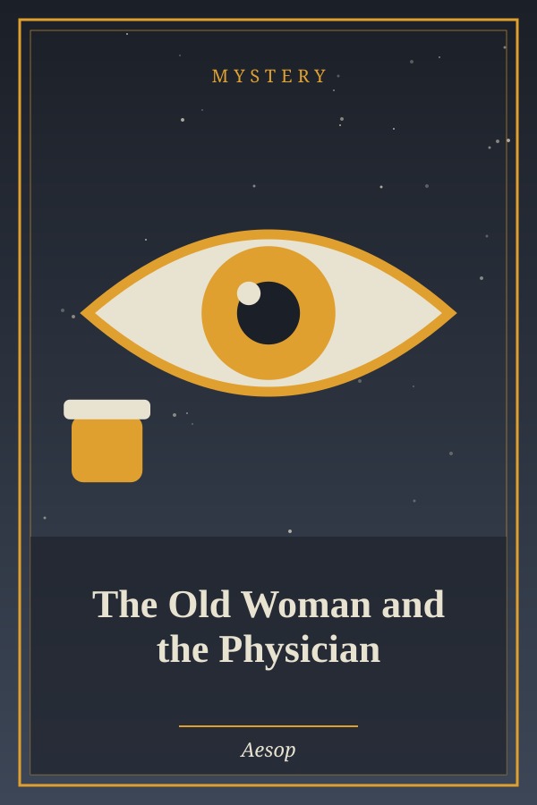
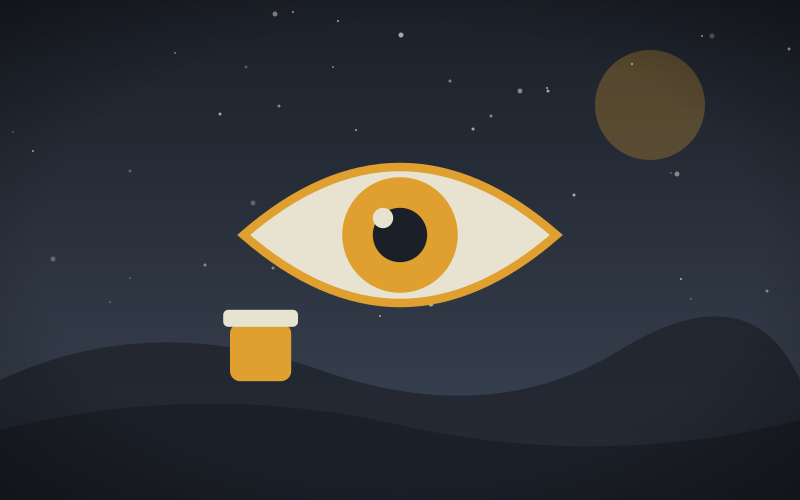

The Old Woman and the Physician
Genre: Mystery
Synopsis
An old woman strikes a bargain with a doctor to cure her blindness, and then discovers that her house is nearly empty.
Chapter 1: The Old Woman and the Physician

An Old Woman having lost the use of her eyes, called in a Physician to heal them, and made this bargain with him in the presence of witnesses: that if he should cure her blindness, he should receive from her a sum of money; but if her infirmity remained, she should give him nothing. This agreement being made, the Physician, time after time, applied his salve to her eyes, and on every visit took something away, stealing all her property little by little. And when he had got all she had, he healed her and demanded the promised payment. The Old Woman, when she recovered her sight and saw none of her goods in her house, would give him nothing. The Physician insisted on his claim, and, as she still refused, summoned her before the Judge. The Old Woman, standing up in the Court, argued: “This man here speaks the truth in what he says; for I did promise to give him a sum of money if I should recover my sight: but if I continued blind, I was to give him nothing. Now he declares that I am healed. I on the contrary affirm that I am still blind; for when I lost the use of my eyes, I saw in my house various chattels and valuable goods: but now, though he swears I am cured of my blindness, I am not able to see a single thing in it.”